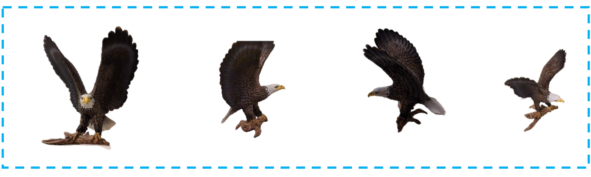
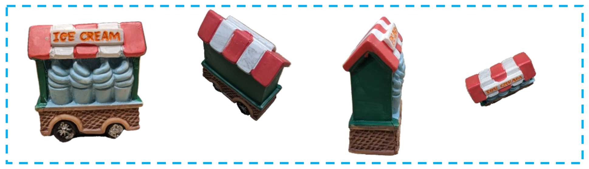
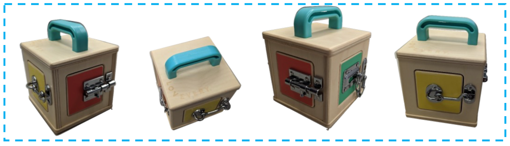
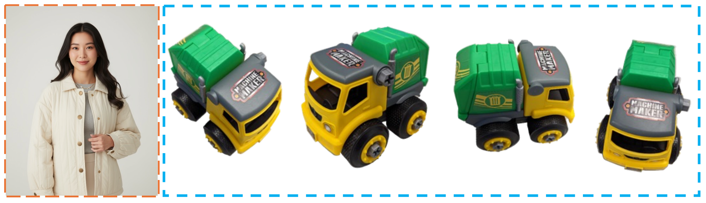
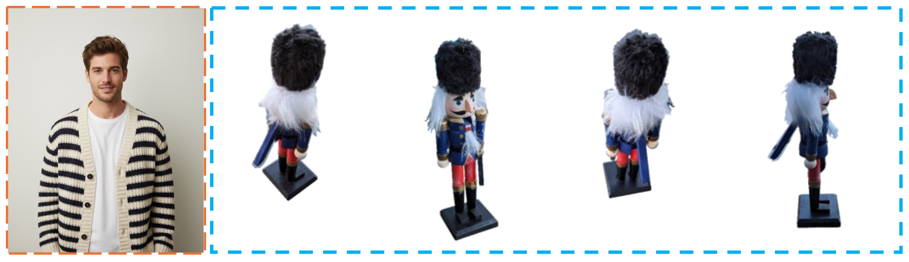
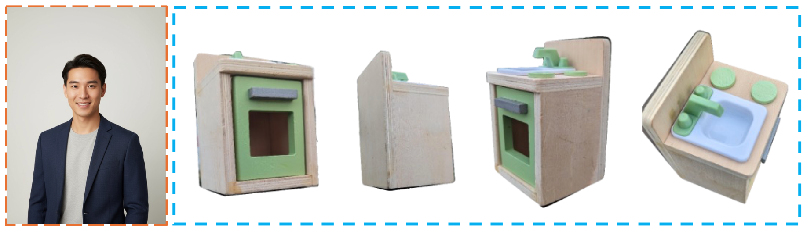
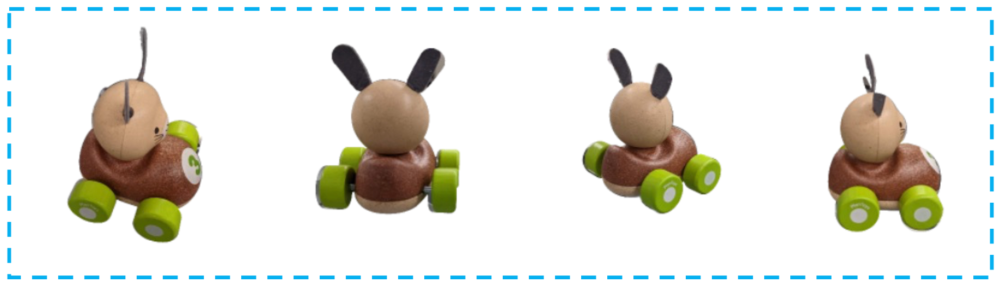

Existing Subject-to-Video Generation (S2V) methods have achieved high-fidelity and subject-consistent video generation, yet remain constrained to single-view subject references. This limitation renders the S2V task reducible to an S2I + I2V pipeline, failing to exploit the full potential of video subject control. In this work, we propose and address the challenging Multi-View S2V (MV-S2V) task, which synthesizes videos from multiple reference views to enforce 3D-level subject consistency. Regarding the scarcity of training data, we first develop a synthetic data curation pipeline to generate highly customized synthetic data, complemented by a small-scale real-world captured dataset to boost the training of MV-S2V. Another key issue lies in the potential confusion between cross-subject and cross-view references in conditional generation. To overcome this, we further introduce Temporally Shifted RoPE (TS-RoPE) to distinguish between different subjects and distinct views of the same subject in reference conditioning. Our framework achieves superior 3D subject consistency w.r.t. multi-view reference images and high-quality visual outputs, establishing a new meaningful direction for subject-driven video generation.
Video Results
Given multi-view reference images for subjects, our MV-S2V can generate videos with multi-view (3D) subject consistency.
The video starts with a detailed figurine of a bald eagle with wings spread wide, perched on a textured wooden base in a well-lit rustic study room filled with shelves of old leather-bound books and antique globes.
As the camera smoothly orbits around the eagle figurine, the background gradually reveals a vintage wooden desk adorned with an old brass lamp, a leather-bound journal, and a dried flower arrangement in a ceramic vase.

The video starts with a small, decorative food cart model with a green base and a red and white striped canopy, positioned on a wooden desk in a cozy home office.
As the camera smoothly orbits around the food cart, the background gradually reveals shelves filled with colorful books, a vintage desk lamp casting a warm glow, and potted plants adding a touch of greenery to the room.

The video starts with a small, wooden activity cube with colorful panels and metal locks, topped with a teal plastic handle, sitting on a child's playroom floor with a soft rug and scattered toys in the background.
As the camera smoothly orbits around the activity cube, the background gradually reveals a low bookshelf filled with children's books and puzzles on one side, and a painted wall adorned with cheerful animal decals and a cozy reading nook with cushions on the other.

In a bright, modern playroom filled with colorful shelves and children's books, a young woman dressed in a cream quilted jacket and a soft grey sweater holds a vibrant green and yellow toy truck.
She smoothly rotates the toy truck with her hands, showcasing its details while glancing down at it with an affectionate smile, clearly enjoying the moment.
The background features playful wall art and cozy cushions, creating a warm, inviting atmosphere.

In a minimalist room with soft white walls, a young man wearing a cream and black striped knit cardigan holds a wooden nutcracker soldier.
He gently rotates the nutcracker with both hands, showcasing its detailed blue uniform, furry hat, and painted features, then looks down at the figure with an appreciative smile.

In a modern minimalist kitchen setting with sleek white cabinets and hanging green plants near a large window, a young man wearing a navy blazer and light gray shirt holds a small wooden toy oven painted in natural wood tones and soft green.
He smoothly rotates the toy oven with both hands, showcasing its detailed front panel and craftsmanship.
As he turns the toy, he smiles confidently and glances at it with a sense of admiration and pride.

Comparison
Object-Centric (OC): Bunny Racer
The video starts with a small, wooden toy mouse on green wheels placed on a light-colored table in a cozy children's playroom filled with colorful cushions and shelves of neatly arranged toys.
As the camera smoothly orbits around the toy mouse, the background gradually reveals a soft rug beneath the table, framed children's books on low shelves, and a pastel-painted wall adorned with playful animal decals.

Phantom-SV
Subject: Car | Multi-View References
Citation
If you find this project useful in your research, please consider citing:
@article{song2026mvs2v,
title={{MV-S2V}: Multi-View Subject-Consistent Video Generation},
author={Song, Ziyang and Gong, Xinyu and Liu, Bangya and Zhao, Zelin},
journal={arXiv preprint},
volume={arXiv:2601.17756},
year={2026}
}